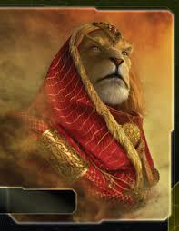
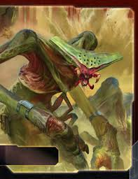
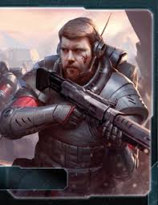
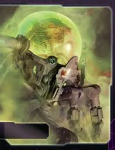
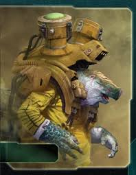
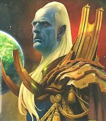

The Emirates of Hacan

Masters of trade who dominate the galactic economy.

Pax Magnifica Bellum Gloriosa

Twilight Imperium is a 4X strategy board game of politics, war, and diplomacy.

Masters of trade who dominate the galactic economy.

A swarm of bug-like creatures that seek to spread and consume all.

Versatile and militaristic humans who started the Twilight Wars.

Highly intellectual fish people with no ethics or morality to speak of.

Diplomatic turtle people who seek peace with the galaxy.

Highly industrialized militarists who use their skilled admiralty to engage in big stick diplomacy.
"The Twilight Wars continued for centuries, but no race was powerful enough to seize the throne and risk suffering a similar fate as the Emperor. Slowly, the strength of great civilizations failed as their economies crumbled and as knowledge and technology was lost in the destruction and strain of long war.
And so the Age of Twilight ended in a slow whisper. The time that followed, now known as the Dark Years, was a period of economic, cultural, and intellectual collapse. The Great Races retreated into their own small, safe areas of space, abandoning what they could no longer hold by force. After several millennia, the Dark Years came to an end, and a calm but uncertain period of rebuilding began.
As I write this, the Great Races of the galaxy have regained elements of their former strength. Here on Mecatol Rex, the Galactic Council is growing in influence once more, while civilizations new and old, are re-colonizing the neighboring systems abandoned during the Dark Years.
The day will soon come when a new Empire will rise. For the sake of all, may the new Emperor have not only the power to seize the throne, but the strength to conquer the peace. If not, I fear that a sea of desolation will drown us all."
- Mahthom Iq Seerva, Winnaran keeper of the Custodian Chronicle
Email: 11037101@uvu.edu
Interested in joining the UVU board game club? Shoot me an email or click here.